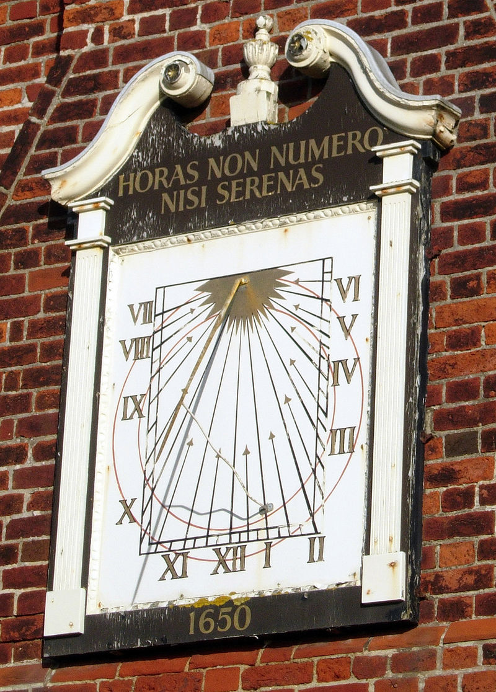
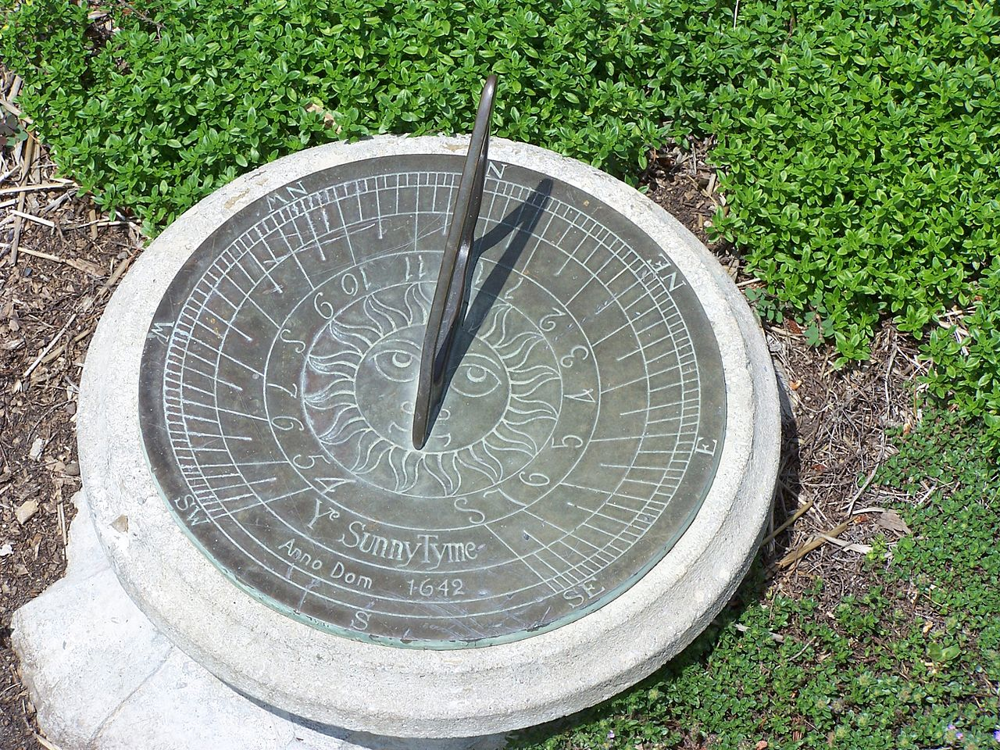
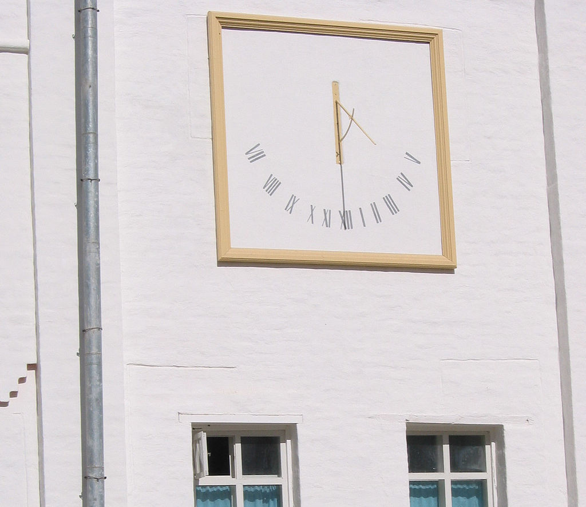
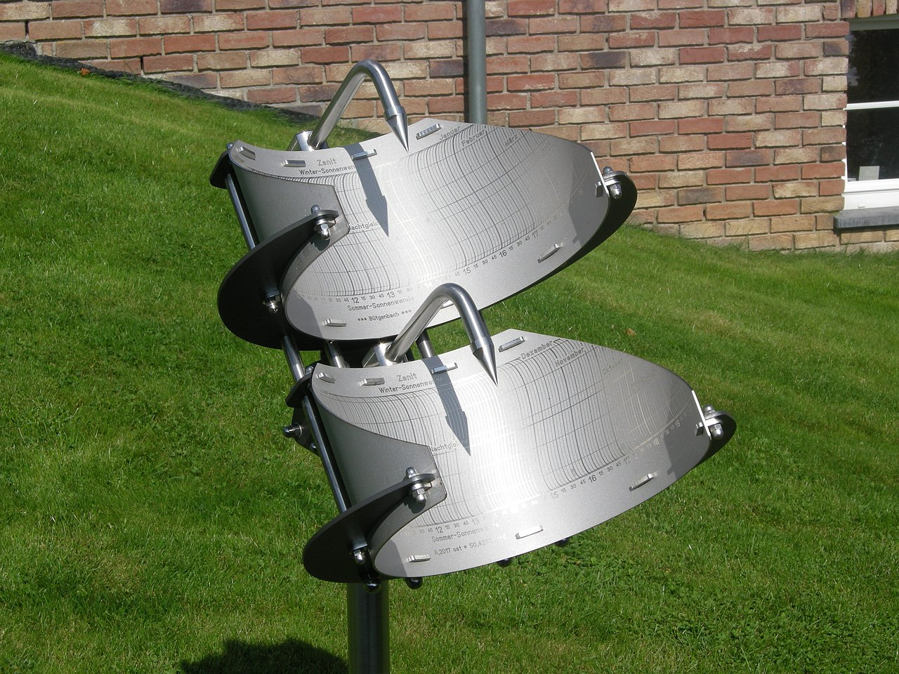
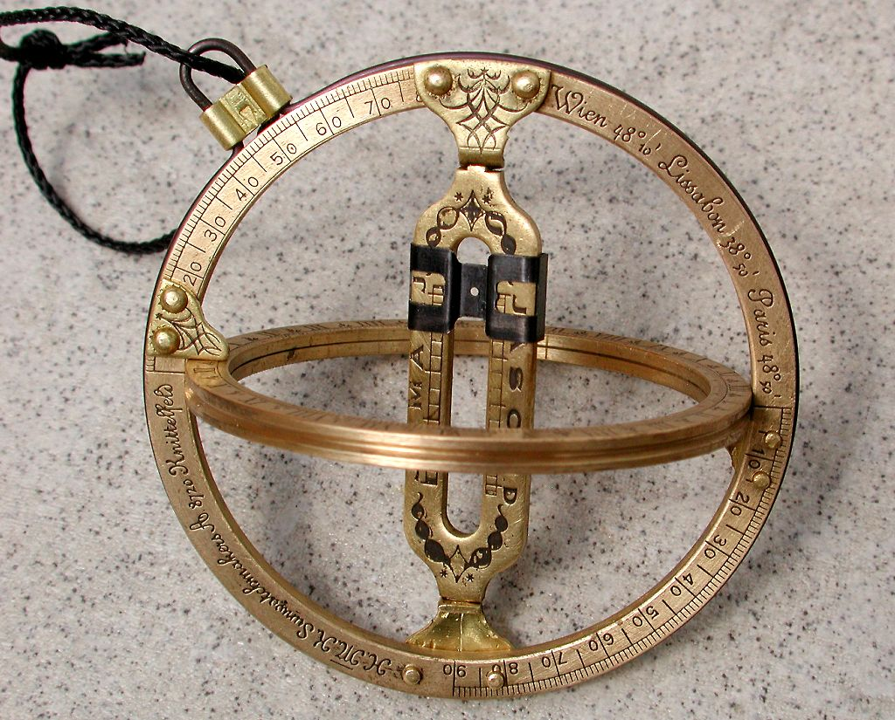
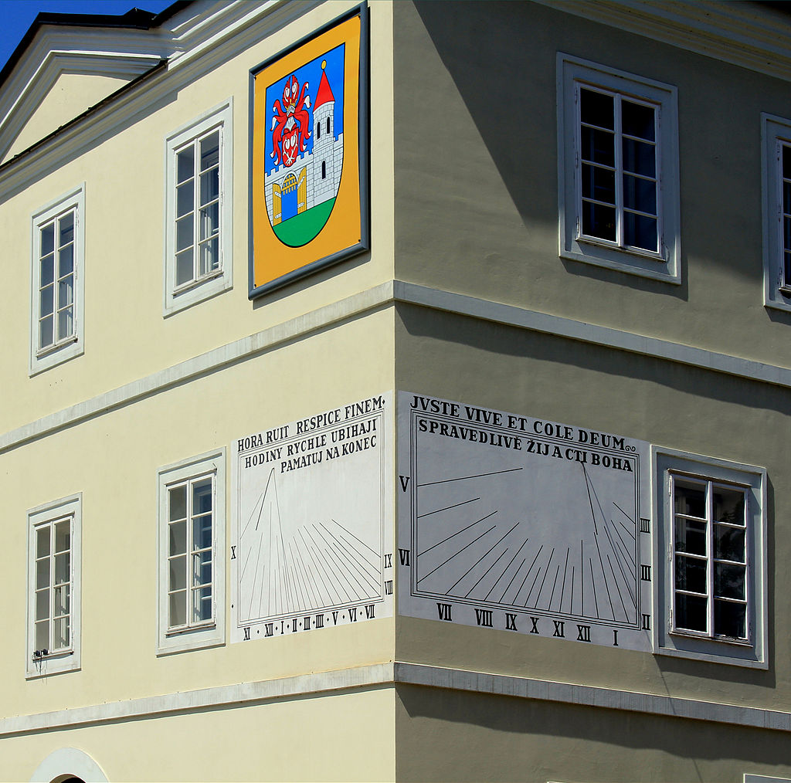
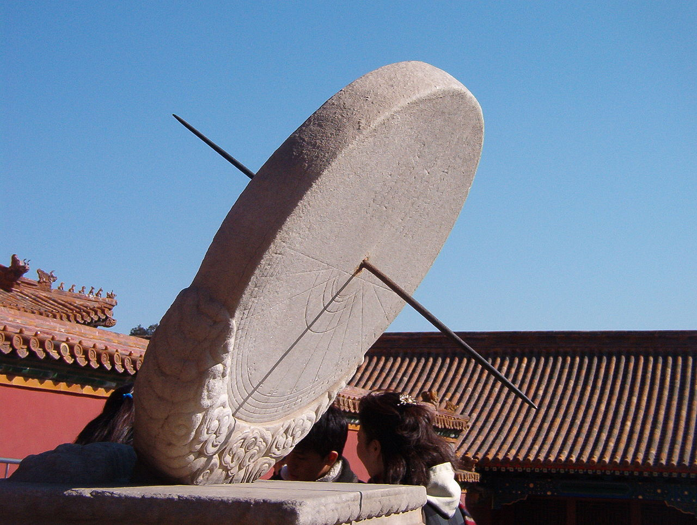
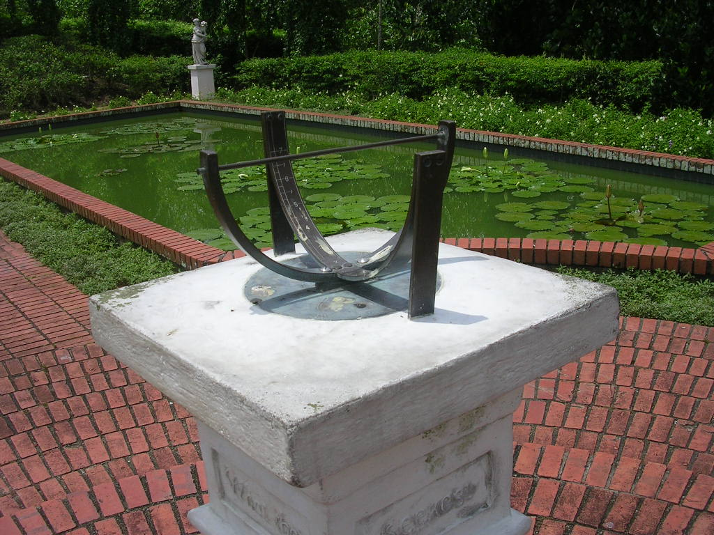

|

⚜
Солнечные часы
⚜
Солнечные часы — устройство для определения времени по изменению длины тени от гномона и её движению по циферблату. Появление этих часов связано с моментом, когда человек осознал взаимосвязь между длиной и положением солнечной тени от тех или иных предметов и положением Солнца на небе.
Простейшие солнечные часы показывают местное истинное, а не местное среднее солнечное время, и не учитывают разницу между официальным временем и местным солнечным временем. Пользоваться солнечными часами можно только днём при ясном небе или при лёгкой облачности, не мешающей образованию чёткой тени. Для повышения точности солнечных часов следует учитывать поправку по формуле времени.
В настоящее время солнечные часы по прямому назначению практически не используются, и уступили место различным видам других часов.
⚜ История
Древнейшим инструментом для определения времени служил гномон. Изменение длины его тени указывало время суток. О таких простейших солнечных часах упоминается в Библии (4 Царств, 20:10, Исайя, 38:8).
Древний Египет
Первое известное описание солнечных часов в Древнем Египте — надпись в гробнице Сети I, датируемая 1306—1290 гг. до н. э. Там говорится о солнечных часах, измерявших время по длине тени и представлявших собой прямоугольную пластину с делениями. На одном конце её прикреплён невысокий брусок с длинной горизонтальной планкой, которая и отбрасывала тень. Конец пластины с планкой направлялся на восток, и по меткам на прямоугольной пластине устанавливался час дня, который в Древнем Египте определялся как 1/12 промежутка времени от восхода до заката. После полудня конец пластины направлялся на запад. Сделанные по такому принципу инструменты также были найдены. Один из них восходит ко времени правления Тутмоса III и датируется 1479—1425 гг. до н. э., второй — из Саиса (по другим данным — из Файюма), он датируется 1000—600 гг. до н.э. Оба инструмента хранятся в Берлинском египетском музее, первый — под инвентарным номером 19744, второй — под номером 19743. На конце у них есть только брусок, без горизонтальной планки, а также имеется желобок для отвеса для придания устройству горизонтального положения.
Другими двумя типами древнеегипетских часов, измерявших время по длине тени, были часы, в которых тень падала на наклонную плоскость или на ступени. Они были лишены недостатка часов с ровной поверхностью: в утренние и вечерние часы тень выходила за пределы пластины. Эти типы часов были объединены в модели из известняка, хранящейся в Каирском египетском музее и датируемой несколько более поздним временем, нежели часы из Саиса. С одной стороны модели — две наклонные плоскости со ступенями, одна из них была ориентирована на восток, другая при этом указывала на запад. До полудня тень падала на первую плоскость, постепенно опускаясь по ступеням сверху вниз, а после полудня — на вторую плоскость, постепенно поднимаясь снизу вверх, в полдень тени не было. С другой стороны модели — две наклонные плоскости без ступеней, этот тип часов действовал аналогично часам со ступенями. Конкретной реализацией типа солнечных часов с наклонной плоскостью были переносные часы из Кантары, созданные около 320 до н. э. с одной наклонной плоскостью, на которой были нанесены деления, и отвесом. Плоскость ориентировалась на Солнце.
В 2013 году учёные Базельского университета сообщили о находке солнечных часов, предположительно вертикальных, возрастом в 3,3 тысячи лет, нарисованных на остраконе известняка. Они были обнаружены в Долине царей возле жилища рабочих между гробницами KV29 и KV61.
Древний Китай
Первое упоминание о солнечных часах в Китае, вероятно, задача о гномоне, приводимая в древнем китайском задачнике «Чжоу би суань цзин», составленном около 1100 года до н. э. В эпоху Чжоу в Китае применялись экваториальные солнечные часы в виде каменного диска, устанавливаемого параллельно небесному экватору и пронизывающего его в центре стержня, устанавливаемого параллельно земной оси. В эпоху Цин в Китае изготавливали портативные солнечные часы с компасом: либо экваториальные — опять-таки со стержнем в центре диска, устанавливаемого параллельно небесному экватору, либо горизонтальные — с нитью в роли гномона над горизонтальным циферблатом.
Древняя Греция и Древний Рим
По рассказу Витрувия, вавилонский астроном Берос, поселившийся в VI в. до н. э. на острове Косе, познакомил греков с вавилонскими солнечными часами, имевшими форму сферической чаши — так называемым скафисом. Эти солнечные часы были усовершенствованы Анаксимандром и Анаксименом. В середине XVIII столетия при раскопках в Италии нашли именно такой инструмент, какой описан у Витрувия. Древние греки и римляне, как и египтяне, делили промежуток времени от восхода до заката Солнца на 12 часов, и поэтому их час (как мера времени) был различной длины в зависимости от времени года. Поверхность выемки в солнечных часах и «часовые» линии на них подбирались так, чтобы конец тени прута указывал час. Угол, под которым срезана верхняя часть камня, зависит от широты места, для которого изготовлены часы. Последующие геометры и астрономы (Евдокс, Аполлоний, Аристарх) придумывали разнообразные формы солнечных часов. Сохранились описания таких инструментов, носивших самые странные названия сообразно их виду. Иногда гномон, отбрасывающий тень, располагался параллельно оси земли.
Из Греции солнечные часы достигли Рима. В 293 г. до н. э. Папирий Курсор велел соорудить солнечные часы в храме Квиринал, а в 263 г. до н. э. другой консул, Валерий Мессала, привёз солнечные часы из Сицилии. Устроенные для более южной широты, они показывали час неверно. Для широты Рима первые часы устроены около 170 г. до н. э. Марцием Филиппом.
Солнечные часы применялись в древнегреческих колониях Северного Причерноморья. Четыре экземпляра часов, найденных на городищах Пантикапей и Китей, хранится в Керченском музее.
Древняя Русь и Россия
В древнерусских летописях часто указывался час какого-то события, это наводило на мысль, что в то время на Руси уже использовались определённые инструменты или объекты для измерения времени по крайней мере днём. Черниговский художник Георгий Петраш обратил внимание на закономерности в освещении Солнцем ниш северо-западной башни Спасо-Преображенского собора в Чернигове и на странный узор («меандры») над ними. На основании более подробного их изучения он высказал предположение, что башня представляет собой солнечные часы, в которых час дня определяется освещением соответствующей ниши, а меандры служат для определения пятиминутного интервала. Подобные особенности были отмечены и у других храмов Чернигова, и был сделан вывод, что солнечные часы в Древней Руси применяли ещё в XI веке.
В XVI веке в России появились западноевропейские портативные солнечные часы. На 1980 год в советских музеях было семь таких часов. Самые ранние из них относятся к 1556 году и хранятся в Эрмитаже, они были предназначены для ношения на шее и представляют собой горизонтальные солнечные часы с секторным гномоном для указания времени, компасом для ориентации часов в направлении север—юг и отвесом на гномоне для придания часам горизонтального положения. Все эти элементы установлены на плате, которая может отклоняться от горизонтального положения, обеспечивая возможность использования часов не на одной, а в интервале широт: 47—57 градусов.
Во время царствования Анны Иоанновны, 23 августа 1739 года вышел сенатский указ, в соответствии с которым на дороге из Санкт-Петербурга в Петергоф устанавливались деревянные верстовые столбы-обелиски, в 1744 году был издан указ о столблении дороги из Санкт-Петербурга в Царское Село. Вместо верстовых столбов-обелисков впоследствии поставили «мраморные пирамиды» с оформлением по работам Антонио Ринальди. Некоторые из них имели солнечные часы, и путник мог узнать по ним расстояние и время. «Мраморные пирамиды» с солнечными часами сохранились в следующих местах: в Санкт-Петербурге на углу набережной реки Фонтанки и Московского проспекта (отмечающий одну версту от здания Почтамта) и в Пушкине у Орловских ворот, расположенных на южной границе Екатерининского парка. На «мраморной пирамиде» у Орловских ворот указана дата установки — 1775 год.
Средние века
Арабские астрономы (Сабит ибн Корра, Ибн аш-Шатир, Абу-л-Хасан ибн Юнис) оставили обширные трактаты по гномонике, или искусству строить солнечные часы. Основанием служили правила тригонометрии. Кроме «часовых» линий, на поверхности арабских часов наносилось ещё направление к Мекке, так называемая кибла. Особенно важным считался момент дня, когда конец тени вертикально поставленного гномона приходился на линию киблы.
С введением равных часов дня и ночи (не зависящих от времени года) задача гномоники значительно упростилась: вместо того, чтобы замечать место конца тени на сложных кривых, стало достаточно замечать направление тени. Если штифт расположен по направлению земной оси, то тень его лежит в плоскости часового круга солнца, а угол между этой плоскостью и плоскостью меридиана есть часовой угол Солнца или истинное время. Остаётся только находить пересечение последовательных плоскостей с поверхностью «циферблата» часов. Чаще всего это была плоскость, перпендикулярная штифту, то есть параллельная небесному экватору (экваториальные, или равноденственные часы); на ней направление тени изменяется на 15 градусов за каждый час. При всех других положениях плоскости циферблата углы, образуемые на ней направлением тени с линией полудня, не растут равномерно.
Гномоника занималась составлением правил нахождения различных положений тени на этих поверхностях. Солнечные часы, как уже сказано, дают не среднее, но истинное солнечное время. Одной из специальных задач гномоники было строить кривую на циферблате солнечных часов, которая указывала бы «средний» полдень в различное время года. В средневековой Европе гномоникой занимались: Апиан, Альбрехт Дюрер, Кирхер. Живший в начале XVI в. Мюнстер был признан «отцом гномоники».
⚜ Типы солнечных часов
Различают солнечные часы экваториальные, горизонтальные, вертикальные (если плоскость циферблата вертикальна и направлена с запада на восток), утренние или вечерние (плоскость вертикальна, с севера на юг). Строились также конические, шаровые, цилиндрические солнечные часы.
Экваториальные
Экваториальные солнечные часы состоят из кадрана (плоскость с часовыми делениями) и гномона. Часовые деления на кадран наносятся через равные угловые промежутки, как на циферблате обыкновенных часов, а гномон обычно представляет собой металлический стержень, устанавливаемый на кадране перпендикулярно его поверхности. Затем кадран ориентируется в горизонтальной плоскости так, чтобы прямая, соединяющая основание гномона и часовое деление, соответствующее полудню, была направлена параллельно полуденной линии в сторону юга — для Северного полушария, или в сторону севера — для Южного полушария, и наклоняется относительно плоскости горизонта, соответственно, в сторону севера или сторону юга на угол &alpha=90°-&phi, где &phi — географическая широта места установки солнечных часов. Кадран будет параллелен небесному экватору (отсюда — название этого типа солнечных часов), а поскольку небесная сфера в течение дня вращается равномерно, то и тень от гномона за любой час дня будет описывать равные углы (поэтому часовые деления и проводятся так же, как на циферблате обычных часов).
Равные угловые промежутки (t=15°) между соседними часовыми делениями, как на циферблате обычных часов, и перпендикулярность гномона кадрану являются основными преимуществами экваториальных солнечных часов над горизонтальными и вертикальными. Главный недостаток экваториальных солнечных часов — то, что они, в отличие от горизонтальных, будут работать только от дня весеннего равноденствия до дня осеннего равноденствия (в Северном полушарии весеннее равноденствие — в марте, осеннее — в сентябре, в Южном полушарии весеннее равноденствие — в сентябре, осеннее — в марте). В остальную часть года они работать не будут, поскольку Солнце будет находиться по другую сторону от плоскости небесного экватора, и вся верхняя поверхность кадрана будет в тени. Конечно, этот недостаток можно устранить, если сделать кадран в виде пластины, нанести часовые деления и на верхнюю, и на нижнюю поверхность, а гномон продолжить под пластину, но и тогда в дни, близкие к дню весеннего или осеннего равноденствия солнечные часы не будут работать — Солнце будет светить на пластину не сверху и не снизу, а сбоку.
Горизонтальные
Горизонтальные солнечные часы, так же, как и экваториальные, состоят из кадрана и гномона. Однако в данном случае кадран устанавливается параллельно плоскости горизонта. Чаще всего гномон представляет собой треугольник, перпендикулярный плоскости кадрана, а одна из его сторон наклонена к ней на угол, равный географической широте места установки часов. Линия пересечения гномона и кадрана направляется параллельно полуденной линии — линии, вдоль которой в данном месте направлена тень вертикального стержня в истинный полдень.
Если обозначить географическую широту места установки часов через &phi, количество часов до полудня (после полудня) через &mu, то угол между полуденной линией и соответствующим часовым делением на часах &alpha можно определить по формуле (все формулы описаны в разделе "Часы своими руками").
Вертикальные
Вертикальные солнечные часы обычно размещают на стенах зданий и различных строений. Поэтому их кадран вертикален — перпендикулярен плоскости горизонта, но может быть повёрнут в различные стороны. От стороны, в которую повёрнут кадран, зависит расположение часовых делений на кадране. Симметричными относительно полуденного деления они будут лишь при кадране, обращённом строго на юг (географический, не магнитный!) — в северном полушарии, или на север — в южном полушарии, иными словами — при кадране, перпендикулярном полуденной линии. Для так направленного кадрана гномон должен лежать в плоскости небесного меридиана, иными словами — быть перпендикулярным как плоскости кадрана, так и плоскости горизонта, а одна из его сторон должна быть параллельной земной оси, откуда следует, что она должна составлять с плоскостью кадрана угол, равный 90°-&phi, где &phi — широта места установки. Формула для угла наклона часовых линий к полуденному делению выводится аналогично горизонтальным часам — из рассмотрения прямоугольного сферического треугольника, образованного кругом склонения Солнца, плоскостью кадрана и плоскостью небесного меридиана.
В Московском планетарии установлены вертикальные солнечные часы, показывающие время и дату.
⚜ Солнечные часы в филателии
Солнечным часам в Санто-Доминго, установленным в 1753 году была посвящена серия почтовых марок Доминиканской республики 1931—1933 гг. Различным старинным настольным солнечным часам посвящены четыре из шести марок серии, посвящённой экспонатам Государственного физико-математического салона в Дрездене, выпущенной в 1983 году в ГДР.
⚜ Интересные факты
Если вылететь на самолёте в истинный полдень и лететь по параллели на запад так же быстро, как вращается Земля (то есть со скоростью точек земной поверхности на этой параллели), то солнечные часы, установленные на самолёте (как горизонтальные, так и вертикальные, экваториальные) всегда будут показывать полдень. Однако, при пересечении линии перемены дат нужно будет прибавлять один день.
⚜
Галерея
|

|
|
Horizontal sundial in Minnesota. June 17, 2007 at 12:21.
|
|

|
|
Настенные (вертикальные) солнечные часы в Соловецком монастыре. Время съёмки 13:40 по московскому времени
|
|
|
|
SSW facing, vertical declining sundial on the Moot Hall in Aldeburgh, Suffolk, England. The gnomon is a rod that is very narrow, so it functions as the style. The Latin motto loosely translates as "I only count the sunny hours."
|
|

|
|
Precision sundial in Butgenbach, Belgium. (Precision = ±30 seconds)
|
|

|
|
Universal ring dial. The dial is suspended from the cord shown in the upper left; the suspension point on the vertical meridian ring can be changed to match the local latitude. The center bar is twisted until a sunray passes through the small hole and falls on the horizontal equatorial ring. See Commons annotations for labels
|
|

|
|
"Double" sundials in Nove Mesto nad Metuji, Czech Republic; the observer is facing almost due north
|
|

|
|
Экваториальные солнечные часы в Запретном городе. An equatorial sundial in the Forbidden City, Beijing. The gnomon points true North and its angle with horizontal equals the local latitude. Closer inspection of the full-size image reveals the "spider-web" of date rings and hour-lines.
|
|

|
|
Sundial in Singapore Botanic Gardens. The fact that Singapore is located almost at the equator is reflected in its design
|
|
|